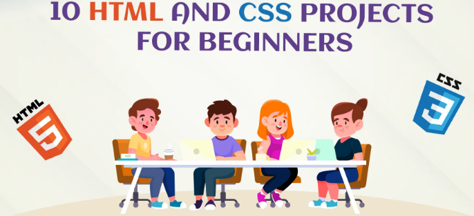

In this journal, I share my journey of learning HTML, CSS, DOM, and JavaScript. These are essential tools for building websites and web applications. I started with learning tags and elements like div, p, and img, then moved on to styling with CSS.
Here's an image that inspires my learning:
Visit MDN Web Docs to learn more about HTML and JavaScript.
Below is a useful YouTube video embedded using an <iframe>:
During this module, I explored several HTML tags and their attributes. These tags help structure content effectively, while attributes improve usability and accessibility.
To dive deeper into web development, I often visit MDN Web Docs for HTML references.
Below is an image that motivates me to keep learning:
JavaScript adds interactivity to web pages. For example, this page displays an
alert message when it loads,
and logs a message to the browser's console.
console.log().alert().